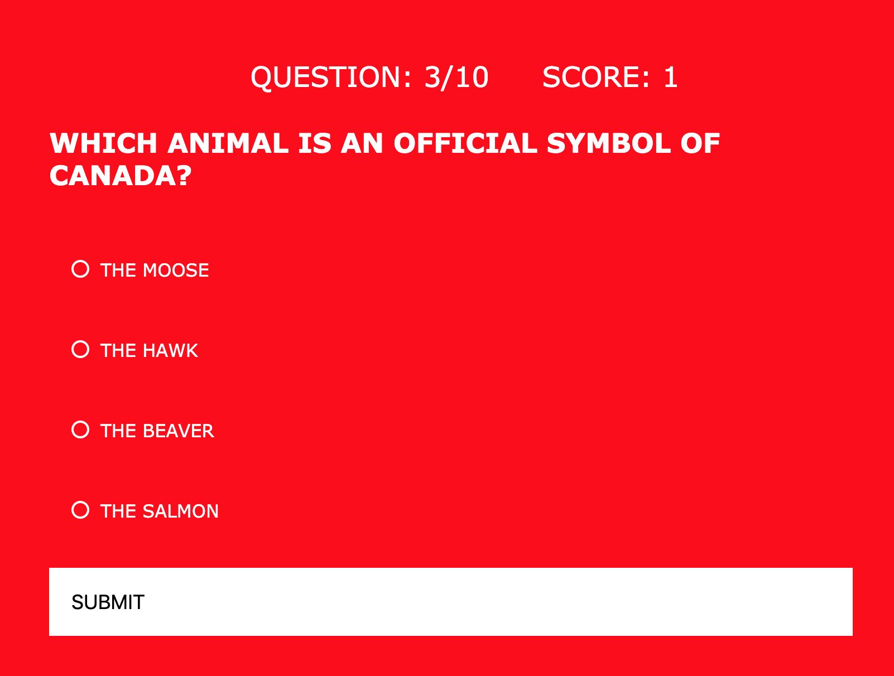

About Me
I am a Startup Swiss Army Knife, with specialities in full stack development, customer success, human resources and marketing. I also run a career coaching business out of Vancouver, Canada.
For the last 9 years I’ve worked in technology and have loved getting deep experience in a number of functions within an organization. I am the kind of person that loves to learn and try out new things. That’s why my 2019 move into full stack development has been the perfect intersection of constant learning and technology. I’ve worked at two SaaS companies (Hootsuite and 7Geese), and constantly felt like I was ‘on the sidelines’ of the real action happening. As a developer, I now am directly contributing to the product, not merely adjacent to it. As our lives all become more intertwined with technology, I want to be on the front lines creating our future.
What sets me apart from others is how I work in a team. Anyone can be hired for their technical skills or years of experience on a resume. I pride myself on being extremely easy to work with, across all functions and including with difficult personalities. In moments of stress, which are inevitable, my sense of humour and practical sensibilities motivate those around me to keep going.
In my free time I love to hike in the Pacific northwest, salsa dance, work on home renovation projects and snuggle my two dogs Lola and Annabelle.
Canadian Citizenship Quiz App
Technologies Used: HTML, CSS and Javascript
In 2019 I became a Canadian citizen and part of that process included studying for and taking a citizenship quiz. I learned so much about about the history, culture and politics of the country during this process and wanted to create a playful quiz that would test other people’s knowledge. Often citizens of countries wouldn’t be able to pass their own citizenship test, so players can see if that’s the case for them or not.